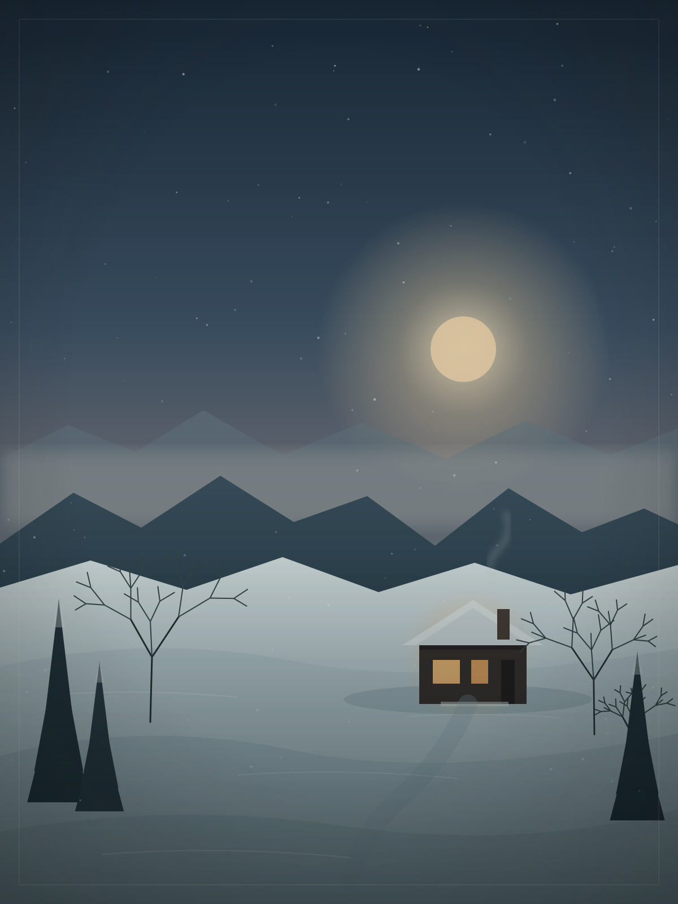

Digital Photo Album · Volume 01
把走过的 路，装订 成册。2026
有些风景地图不会标注，有些时刻只发生一次。这里收录我们在山海之间、 城市褶皱与日常光线里遇见的片刻。
摄影 / 文字 水上行走编辑部
ISSUE 01 — 2026
READ SLOWLY, LOOK CLOSER.

WALK ON WATER · 二〇二六
Editor's Note
编辑手记
写于第一册付印之前
我们习惯把宏大的瞬间称为「值得记录」，却常常忘记，真正构成生活的， 是那些没有被安排的光。
一杯咖啡上方的尘埃，雨后路灯在水洼里的倒影，山路上忽然散开的雾—— 它们不被计划，也无法重来。这本画册想做的，只是把它们留下来，按自己的节奏， 一页一页地放好。
水上行走编辑部 · 2026 年春
Also in this issue
其他册集


On Photography
拍照是为了记住，— 水上行走手记，2025
而整理，是为了再走一遍。
下一册，仍在路上。
画册每季更新一册。如果你也收藏着某些不想遗忘的光， 欢迎来信，交换彼此的路。